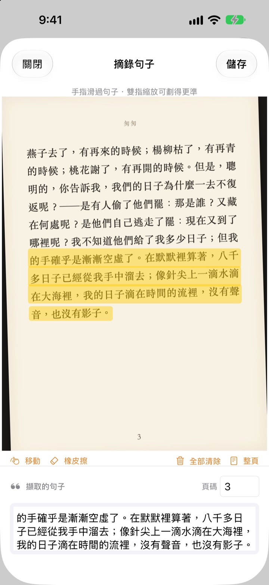
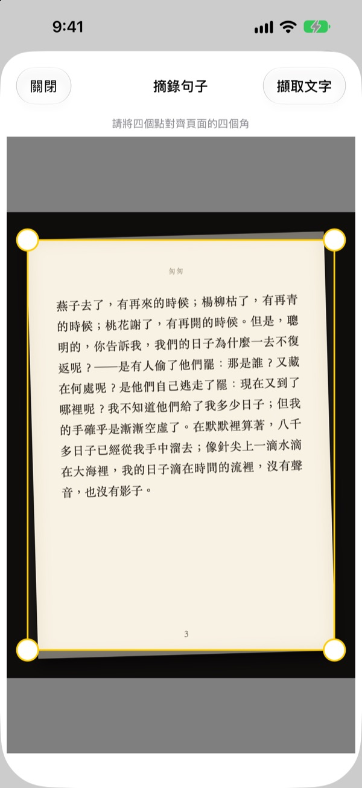
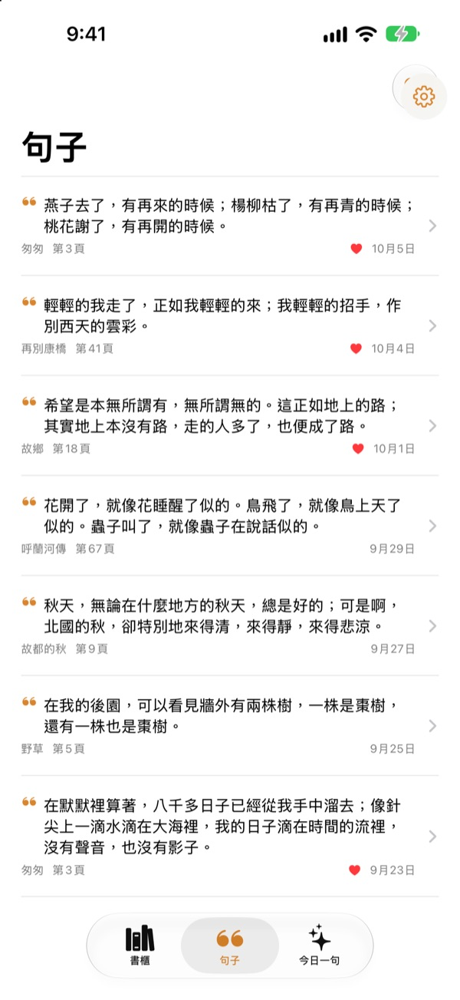
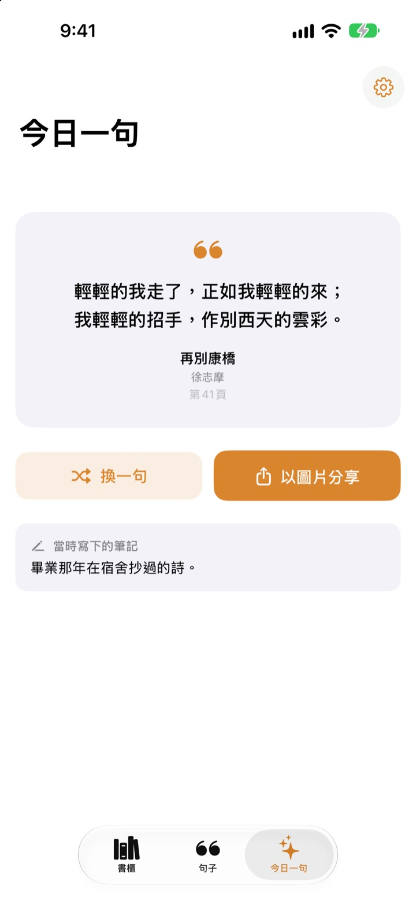

劃一下試試看
用手指或滑鼠在下面這頁的任何句子上劃過，只有劃到的字會出現在卡片上。
讀到的好句子，最後都去哪了？
圖書館借來的書不能畫線。拍下的書頁照片，一下子就淹沒在幾千張照片裡。打進備忘錄，書名和頁碼又常常漏掉。用劃線，拍一下、劃一下，句子、書名和頁碼就都留下來了。
拍歪了，也能變平整
拍下書頁後對齊四個角，斜著拍的照片也會被拉平，像一張紙一樣端正。字越清楚，辨識越準確。
相簿裡現有的照片也能用。

所有摘錄，集中一處
書以封面排列在書櫃上，句子匯集成一個列表。可以依句子、筆記或書名搜尋，想再讀的句子點個愛心。
拍一張封面就能新增書籍，自動讀取書名和作者；拍到封底條碼，ISBN 也會填好。

與遺忘的句子重逢
今日一句每天從你的摘錄中挑出一句，連同當時寫下的筆記一起送到你面前。用小工具把它放在主畫面或鎖定畫面上。
喜歡的話，還能做成紙張質感的卡片圖片分享出去。

三個步驟就上手
- 1
拍封面
自動填好書名和作者，儲存前可以修改。
- 2
拍書頁
對齊四個角，頁面就會變平整。
- 3
劃句子
自動找到頁碼，一起儲存。
劃線畫面的操作
- 手指劃過
- 只選取劃到的字
- 雙指縮放
- 放大後劃得更準
- 移動
- 拖移放大後的頁面
- 橡皮擦
- 把劃過的字取消選取
- 全部清除
- 取消所有已選取的字
- 整頁
- 保留整頁文字
- 頁碼欄
- 顯示辨識到的頁碼，可以修改
使用 VoiceOver 時，點兩下某一行即可加入或移除。
所有功能免費
免費
- 拍封面新增書籍，掃條碼讀取 ISBN
- 書頁校正與手指劃線
- 自動辨識頁碼
- 書櫃、句子搜尋與最愛
- 今日一句及主畫面、鎖定畫面小工具
- 製作卡片圖片分享
- iCloud 同步
支持開發者
- 願意的話，可以在設定裡給一點小費
- 小費不會解鎖任何功能，給不給，App 都一樣
沒有廣告，沒有訂閱。
常見問題
照片或摘錄會被傳送到別處嗎？
不會。文字辨識透過 Apple Vision 全部在裝置上完成，照片和摘錄不會傳送到伺服器，離線也能使用。詳情請參閱下方的隱私權政策。
可以辨識哪些語言的書？
文字辨識由裝置上的 iOS 完成。可以辨識中文、英文、日文、韓文、俄文以及大多數西歐語言的書；在較新的 iOS 版本上，還支援泰文、越南文、土耳其文、印尼文、波蘭文、捷克文、荷蘭文和北歐語言。目前還無法辨識希臘文。
要怎麼只選取想要的句子？
拍下書頁後，像用螢光筆一樣，用手指在句子上劃過，就只會選取那些字。雙指放大可以劃得更精準。另外還有「橡皮擦」、「全部清除」和「整頁」。
書名或作者辨識錯了。
封面辨識是依照字體大小來判斷的，遇到設計感很強的封面可能會認錯。儲存書籍前，可以修改書名和作者。
頁碼不對。
頁碼是從照片邊緣的數字讀取的。儲存前在頁碼欄裡改過來就好。
可以在多台裝置上看到摘錄嗎？
可以。只要用同一個 Apple 帳號登入 iCloud 並開啟 iCloud 雲碟，書籍和摘錄就會自動同步。
要怎麼加入小工具？
在主畫面上按住不放，點一下「編輯」>「加入小工具」，然後選擇「劃線」。鎖定畫面則按住不放後點一下「自訂」。今日一句就會顯示在那裡。
相機無法使用。
請在「設定」›「劃線」中確認已允許取用相機和照片。拍照需要使用實體 iPhone。
需要什麼條件？
一支搭載 iOS 17.0 或以上版本的 iPhone。
要怎麼聯絡你們？
可以在 App 的設定（齒輪）畫面傳送意見回饋，或寄電子郵件到下方的地址。我們通常會在兩三天內回覆。
有問題或建議？歡迎寫信至 leeo@kakao.com。